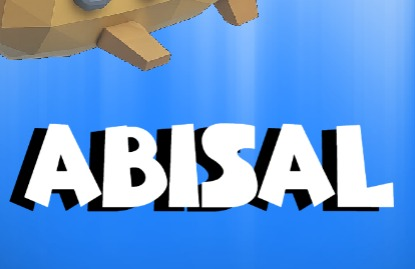
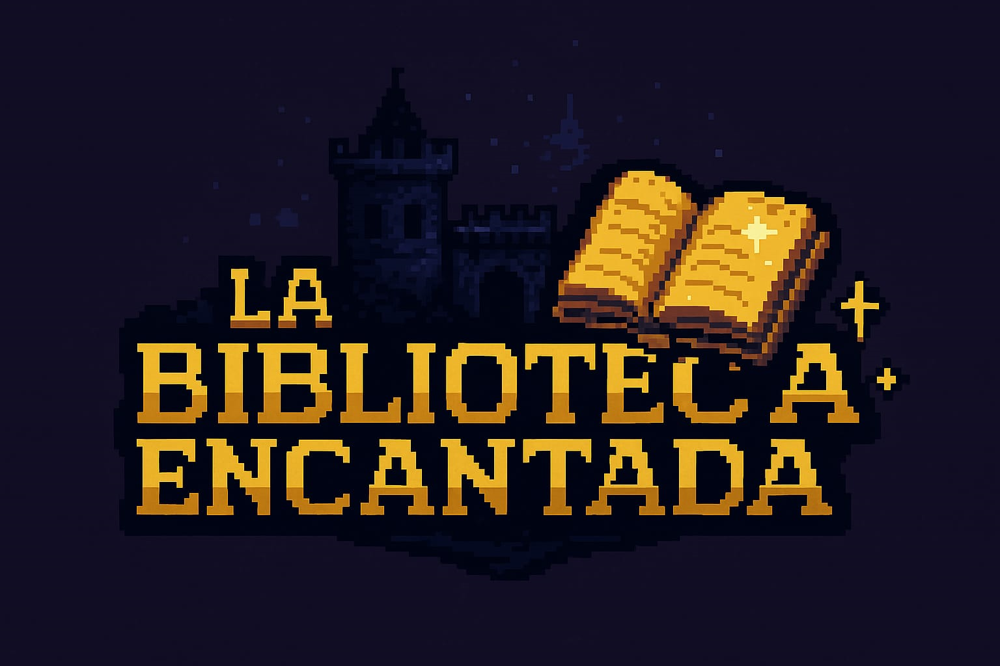
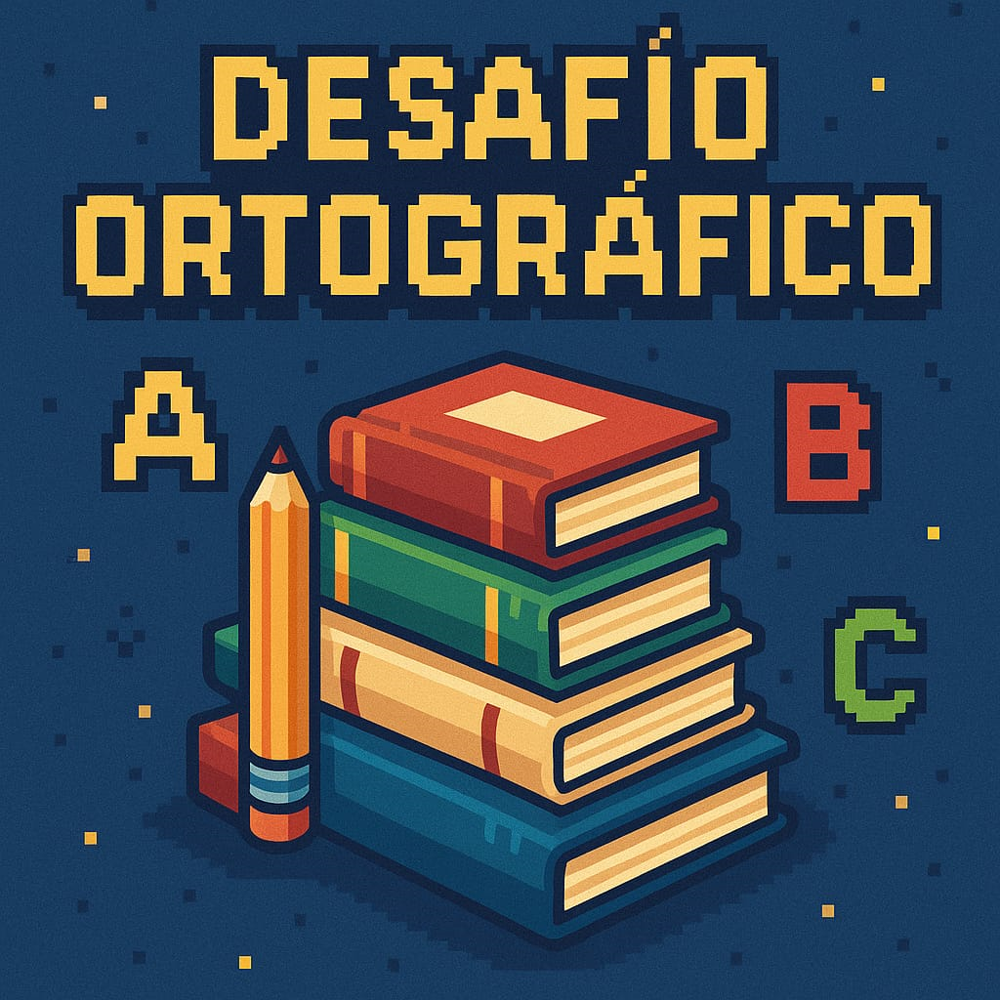

Juegos Educativos Interactivos
Desarrolla tu mente mientras te diviertes. En PlayMinds creamos juegos que inspiran, educan y entretienen. ¡Explora, aprende y juega!

Abisal
Una aventura corta y contemplativa donde desciendes por las profundidades del océano. A medida que bajas, descubres criaturas cada vez más extrañas, misteriosas y aterradoras. No hay objetivos, solo el asombro de explorar lo desconocido.
Jugar AhoraPlaynus Noir
Un juego de 10 preguntas cada vez más desafiantes, envuelto en una estética noir. Cada acierto te adentra más en el misterio. Solo los más sagaces llegan al final.
Jugar Ahora
Biblioteca Encantada
Recoge cinco libros antiguos escondidos en una aldea medieval y entrégalos al rey para preservar el conocimiento perdido. ¡Explora, aprende y vive la historia en La Biblioteca Encantada!
Jugar AhoraGalactuMind
Un juego de trivia trepidante donde cada respuesta correcta te da unos segundos más para salvar al planeta. Un devorador de mundos se aproxima a la Tierra, y solo tu rapidez mental puede retrasar su ataque. Las preguntas aparecen al azar, poniendo a prueba tus reflejos y conocimiento bajo presión. ¿Cuánto tiempo lograrás mantenerlo alejado?
Jugar Ahora
Ortografía
Es un juego que busca reforzar el uso correcto de las tildes en palabras mediante retos interactivos y dinámicos, ayudando a los jugadores a mejorar su ortografía de forma divertida.
Jugar AhoraPLAYMINDS tiene como propósito transformar la manera en que las personas aprenden mediante los videojuegos, proporcionando una plataforma que facilita el acceso a juegos educativos seleccionados de diversas fuentes y desarrollando títulos propios enfocados en el aprendizaje interactivo. Buscamos aprovechar la tecnología para hacer la educación más atractiva, accesible y efectiva, promoviendo el pensamiento crítico, la creatividad y la resolución de problemas en niños y jóvenes. A través de nuestra plataforma, aspiramos a conectar a estudiantes, docentes y padres con herramientas digitales que potencien el aprendizaje, reduciendo la brecha educativa y promoviendo el uso responsable de los videojuegos como un recurso didáctico.